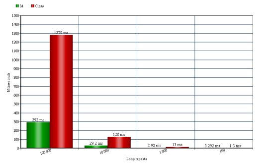
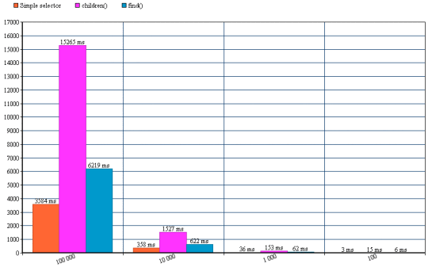

Selecting element by id & class attribute
If you are writing a jQuery plugin/framework or you want better performance of your code you will find the post as interesting.
Use id attribute as much as possible!
The best way to select an element from the DOM is using an id attribute. Selecting an element in this way $("#myId") calls the browser javascript engine using getElementById() function. The function getElementById() returns reference to the first element object in document by it's id. If the element with the specific id isn't found in the document the function returns null.
Let's see the following code:
<script src="http://ajax.googleapis.com/ajax/libs/jquery/2.0.2/jquery.js"></script>
<div id="#myId"></div>
<script>
console.time('selecting by id');
for(var i = 0; i < 100000; i++)
{
var element = $('#myId');
}
console.timeEnd('selecting by id');
</script>
The average result of executing the code is 292.11ms (The results have been observed on my PC. The performance will be different in different hardware configurations. The results varies and they might depends on version of jQuery, the actual performance of your system and so on). Now lets see what will be the performance when we are selecting by class name.
Performance selecting by class name
<script src="http://ajax.googleapis.com/ajax/libs/jquery/2.0.2/jquery.js"></script>
<div class="myClassName"></div>
<script>
console.time('selecting by class name');
for(var i = 0; i < 100000; i++)
{
var element = $('.myClassName');
}
console.timeEnd('selecting by class name');
</script>
Wooooow!?! Average: 1278.92ms
PS: I've had only one element in the DOM. Can you imagine if I have got 1500 elements in the document what will be the result? I don't want to imagine...
It's time for comparing the results

It's a simple math ... 1278.92 - 292.11 = 986.81ms are the difference between these two simple selectors. I've made the test using the loop who repeats 100 000 times. If we divide the result of the 100 000 repeats we have 0.01ms(approximately difference) for each selection. I'm remaindering you that I've had only one element in the document and the tests have been made on my computer => this affects to the results(in most cases positively).
Fastest way to select with both selectors
People often doesn't know how to select the elements correctly. I see people to use:
var element = $("#myId .myClassName .mySecondClass p input");
... usually and often it's the correct way to select elements but sometimes when you have many nested elements in the DOM the classic way isn't the fastest. Now I'm going to explain you how Sizzle works(Sizzle.js is JavaScript library who helps us to select elements from the DOM easily. When you get jQuery you have the sizzle inside by default). Sizzle reads the selectors from right to left. E.g. Sizzle gets all the inputs -> which are in paragraphs -> which are in elements with class "mySecondClass" -> which are in elements with class "myClassName" -> which are in element with Id "myId". So long way to do it. For 100 000 selections of the element the average time is: 3584ms. There are several ways to select the same element. I'll show you some of them...
var element = $("#myId").children(".myClassName").children(".mySecondClass").children("p input");
Now we get directly the element with id equals to "myId". Using the children() function calls $.sibling() method that makes the operation slower. The test takes 15265ms for executing (again 100 000 selections).
One of the fastest way to select the element from second or bigger level of the DOM without using children() is using find().
The find() searches all inner levels of the DOM. Difference here is that the children() searches only the first level of parent. E.g.
<div id="first">
<input type="text" /></div>
<script>
$(function ()
{
var element = $("#first").children("input");
});
</script>
The children() will never find the input element. In this case you have to use the find() method.
var element = $("#myId").find(".myClassName .mySecondClass p input");
I've selected the element 100 000 times using the find() and the average result was: 6219ms
The Results

Conclusion:
- Use id attribute as much as possible
- If you want to search a child from second or bigger level in the DOM you have to use find() not children().
- Hint: Don't specify the type of searched element e.g. $("div.myClass")